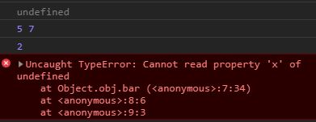

a: We have 1 Global Variable - x
b: Yes, we have 1 closure in the code from the function expression func1
c: The output of the code will be two alert messages with outer1 and 10 respectively
To call f1() from outside the module, I will modify the module to use the revealing module pattern. This will make the module look like this:
Afterwards we can call it using module.f1(arg1,arg2)
When we run the code as it is, we get:
The reason why we get undefined for the first output is that we are trying to log this while in strict mode but the current function is not 'owned' by an object.
The next output of 5 7 comes from the input to the IIFE which was passed on execution.
The next output of 2 comes from the execution of obj.foo(). The this.x mentioned in the method will print out the value of
x for the enclosing object.
The error in the last output occurs because we attempt to use the
arrow function to reference this but by definition, arrow functions can not have a reference to this in strict mode. Hence, this will be undefined.